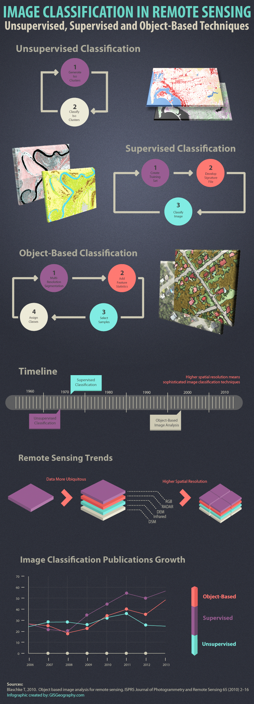

6 Classification I
6.1 Summary
This week we looked at how classification can help build important use cases for remote sensing. Starting with some practical use cases and then onto the theory and methods to produce outputs before practically applying this using Google Earth Engine. A recent example of remote sensing classification was that of the French authorities which identified undeclared private swimming pools and reclaimed €10m in revenue that otherwise wouldn’t have been possible (BBC (2022)). The driver for this was in response to drought, other use cases include illegal logging (Gonzales (2019)) and forest fires (Hansen et al. (2013)).
6.1.1 Classification
Traditionally there were two main forms of classification, according to Abburu and Babu Golla (2015) these can be defined as:
- Supervised: requires human input to build a training set with the accuracy highly dependent on the samples used for training . Techniques used include Support Vector Machine (SVM) and Random Forest.
- Unsupervised: uses clustering methods to group pixels into clusters then an analyst assigns labels to the clusters. Most commonly used techniques are ISODATA and K-means clustering.
6.1.1.1 Object Based Image Analysis
Both the traditional methods use pixel-based processing whereas in the late 1990s object based classification has become increasingly popular through Object Based Image Analysis (OBIA).
OBIA groups pixels into an object type which are then used as training data for the actual analysis.
The basic steps for all these forms of classification are expertly summarised by GISGeography (2014) and the steps involved can by shown in Figure 6.1 which also shows how OBIA has increased in popularity since 2006.

There is a clear trend of increased OBIA use from 2012 and it’s unfortunate that an updated version of this infographic is not available. However this does illustrate a shift toward OBIA, this is due to higher accuracy results and classifications especially in high-resolution imagery. This approach is more closely aligned to the human visual interpretation of images rather than a pixel based approach and the key to this is segmentation before classification takes place. Amalisana, Rokhmatullah, and Hernina (2017) state that pixel based classifications are also more likely to make the results heterogeneous and contain more noise and concluded that the accuracy of object based classification was 82.15% where as pixel based only 61.481%.
6.2 Application
Look at specific methods of classification with brief description:
Classification and regression trees (CART)
Regression Trees
Cross Validation
Random Forest
Support Vector Machine
Create summary table of these methods and their preferred use cases plus pros and cons using specific examples
As discussed above OBIA requires segmentation of the image into objects, similar to how humans visualises the world. The next phase is the actual classification of this objects, where machine learning plays a vital role in reducing the labour resource. These are termed the classification techniques.
The techniques used for supervised and unsupervised classification were mentioned in Section 6.1.1, so now to focus on the techniques for OBIA.
6.3 Reflection
The practical session involved producing our first classified output with GEE. This proved troublesome with errors such as the “Collection query aborted after accumulating over 5000 elements”. There are many threads covering this with differing interpretations and I tried many different “solutions”. However after eventually consulting the GEE coding best practice I realised the issue was related to a print statement not the processing and whilst not ideal this didn’t affect the visualisation.
Moral of the story…..
//read the instructions
I lost time troubleshooting the errors but this was a blessing as I dug deeper into the code and thus gained a better understanding. Eventually my first classification visualisation was produced (?fig-classification-output) which appears close to real world but some refinement is needed. Notably a large part of the River Thames is classified as high urban, however this should be resolved by improving the training data.
As GEE is so quick to train/run I updated the water training polygons and the output was more accurate (Figure 6.2). However, this had the effect of now incorrectly classifying other water bodies. Continual retraining is needed to refine the output - perhaps by separating “standing water” and “flowing water” into individual training datasets. Despite this it really highlighted what a useful tool GEE is.